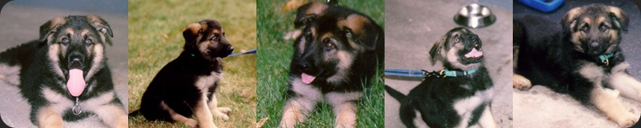

Basic Facts About Nasdaq
- Date of Birth: June 29, 1999
- Place of birth: Leerburg Kennels – Menomonie, WI
- Litter Letter: "N"
- AKC Registration: DL795222/03
- Litter: One male (that's me) – four females
- Mother's Name (Dam): Anja Vom Starkannof (AKC # DL512059/03, 10-95)
- Father's Name (Sire): Orfey Von Haus Antverpa (AKC # DL479396/01, 9/93, Bel)
- Breeder: Ed Frawley, P.O. Box 218, Menomonie, WI
